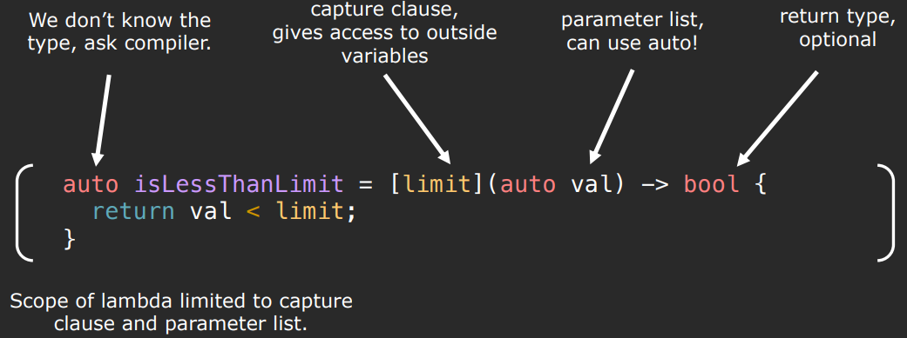
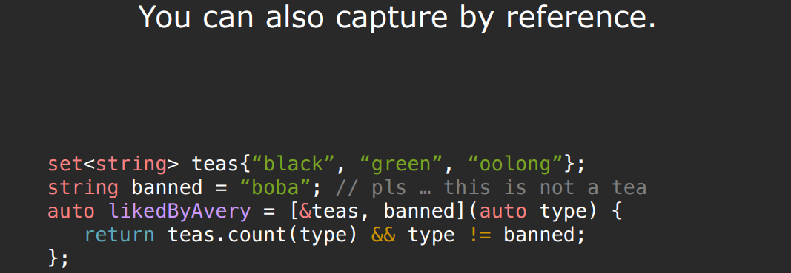
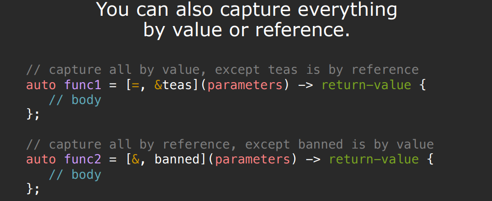

5.Functions and Algorithms
概念提升
在上个笔记中，countOccurences函数还有最后一个问题没有解决：统计向量后半部分中最多有多少元素小于或等于5。这一问题可以使用谓词函数来解决。
谓词函数是一种特殊类型的函数，它接受一定数量的参数，并基于这些参数返回一个布尔值。这种函数特别适用于算法中的条件判断，能够增加代码的可复用性和灵活性。
示例：谓词函数的类型
- 单参数谓词（Unary Predicate）：接受单一参数，返回布尔值。
1 | |
- 双参数谓词（Binary Predicate）：接受两个参数，返回布尔值。
1 | |
应用于countOccurences函数
通过将固定条件（如等于某个值）替换为谓词函数，我们可以将countOccurences函数改造为更加通用和灵活的版本。
原始版本：统计元素等于给定值的次数。
改进版本：统计满足任意谓词条件的元素次数。
1 | |
实际应用：解决“统计向量后半部分中最多有多少元素小于或等于5”的问题。
- 首先定义一个适当的谓词函数：
1 | |
- 然后应用改进版的
countOccurences函数：
1 | |
lambda表达式
如果我们想让谓词函数更加通用，比如可以判断元素是否小于任意值，一种错误的写法如下：
1 | |
在上面的示例中，isLessThanLimit函数内的limit变量并不在其能访问的作用域。作用域阻碍谓词函数变得更通用。lambda 表达式则可以解决这一问题。
Lambda表达式允许你在需要函数对象的地方编写内联、匿名的函数体。这特别适用于定义短暂使用的自定义操作，如STL算法中的谓词函数。Lambda表达式可以捕获作用域中的变量，使其在函数体内可用，从而提高了代码的灵活性和表达力。
示例：使用Lambda表达式比较元素
1 | |
Lambda表达式的优势
- 简洁性：Lambda表达式简化了代码，使其更加紧凑，尤其是当定义简短的函数时。
- 灵活性：通过捕获列表，Lambda表达式可以访问函数外部的变量，无需通过参数传递。
- 直观性：Lambda直接在需要的地方定义，提高了代码的可读性和理解度。
isLessThanLimit的详细解释：



std::function
std::function 是一个通用的函数封装器，用于存储和调用任何类型的可调用对象，如函数指针、Lambda表达式、或其他函数对象。
使用 std::function<R(Args...)>，你可以创建一个变量，该变量能够存储并调用返回类型为 R、接受参数类型为 Args... 的任何可调用对象。
示例
封装普通函数：
1 | |
std::bind
std::bind 允许调整函数参数的顺序，绑定一些参数为固定值，或者将成员函数绑定到对象实例上。它可以用来适配函数接口，使其满足特定的调用要求。
示例
1 | |
std::bind 的使用已经由C++11后的Lambda表达式大部分取代，因为Lambda提供了更加灵活和直观的方式来实现相同的功能。
算法命名规范
C++ STL中的算法命名遵循特定的规范，以便于理解它们的功能和用法。这些命名规范包括后缀_if、_copy和_n，它们指示算法的特殊行为。
后缀为_if的算法
以_if结尾的算法（如replace_if、count_if等）要求传入一个谓词函数。这种类型的算法仅当元素满足谓词函数定义的条件时，才对元素执行指定操作。谓词函数接受一个元素作为参数，并返回一个布尔值，指示元素是否符合特定条件。
示例：count与count_if
count算法计算一个特定值在给定范围内出现的次数：
1 | |
count_if算法根据谓词函数的条件，计算给定范围内元素满足条件的次数。例如，确定vector<int>中偶数的数量：
1 | |
含copy的算法
包含copy字样的算法（如remove_copy、partial_sort_copy等）执行特定任务，并将结果复制到另一个容器。这类算法不修改原始数据，而是将变更后的数据集复制到新的位置。
以_n结尾的算法
以_n结尾的算法（如generate_n、search_n等）执行操作固定次数。这些算法通常需要一个起始迭代器和一个次数参数，表明操作执行的次数。
示例：fill与fill_n
fill算法将一个范围内的所有元素设置为指定值：
1 | |
fill_n算法从给定起始位置开始，将指定数量的元素设置为某个值：
1 | |
std 算法简介
重排序算法
排序（sort）：
1 | |
sort函数要求传入的迭代器类型为随机访问迭代器，因此它不能用于对map或set这样的容器进行排序。
默认情况下，sort使用<运算符对元素进行排序，但也可以指定一个自定义的比较函数或重载<运算符来改变排序规则。
1 | |
随机打乱（random_shuffle）：
1 | |
random_shuffle内部使用内置的rand()函数生成随机数。因此，在使用random_shuffle之前，应该先使用srand函数对随机数生成器进行种子设置。
旋转（rotate）：
旋转容器中的元素。例如，对于给定的输入容器(0,1,2,3,4,5)，围绕位置3旋转容器将得到(2,3,4,5,0,1)。
1 | |
查找算法
find：
find函数接收两个迭代器（定义一个范围）和一个值作为参数，返回一个指向范围内第一个等于该值的元素的迭代器。如果没有找到匹配的元素，find将返回第二个迭代器（即范围的末尾）。
1 | |
binary_search
对于已排序的线性容器（如已排序的向量），可以使用binary_search算法快速搜索。该算法检查指定值是否存在于容器中，但不返回元素的迭代器。
1 | |
lower_bound
binary_search只能用于检查元素是否存在，而lower_bound可用于获取具体元素位置的迭代器。
如果你想要执行二分查找并获取指向某个元素的迭代器，应使用lower_bound算法。lower_bound返回一个指向第一个不小于（大于或等于）指定值的元素的迭代器。如果范围内不存在这样的元素，则lower_bound返回的迭代器可能会指向一个与所查找元素不同的值。
移除算法
remove 和 remove_if
C++标准库提供了remove和remove_if算法，用于从序列中移除元素。然而，这些算法并不直接从容器中删除元素；它们重新排列容器中的元素，将不需要删除的元素前移，然后返回新的逻辑序列结束的迭代器。实际的容器大小不变，被“移除”的元素仍在容器的末尾部分，只是不再是序列的一部分。
使用remove
remove算法移除所有等于指定值的元素。例如，从一个整数向量中移除所有的3：
1 | |
结合erase使用
为了从容器中彻底删除这些元素，需要配合使用容器的erase方法：
1 | |
使用remove_if
remove_if根据提供的谓词条件移除元素。这允许移除满足特定条件的所有元素，例如移除所有标点符号：
1 | |
迭代器适配器
迭代器适配器允许我们以灵活的方式操作容器或其他序列，解决了在复制操作等场合预先确定目标空间大小的难题。它们表现得像迭代器，支持解引用和递增操作，但并不直接对应容器中的具体元素位置。
插入迭代器
插入迭代器（如back_insert_iterator）在写入操作时不是替换容器中的元素，而是在容器的末尾插入新元素。这对于动态增长的容器，如std::vector或std::deque，特别有用。
1 | |
在算法中使用std::back_inserter可以简化代码，自动创建一个back_insert_iterator实例。
1 | |
集合操作迭代器
对于集合操作，如求并集、交集等，std::inserter在指定位置插入新元素，适用于std::set等不支持push_back的容器。
1 | |
ostream_iterator
ostream_iterator用于将输出操作关联到一个流（如标准输出cout或文件流ofstream），而不是直接操作容器中的元素。向ostream_iterator写入值时，这些值会被发送到关联的输出流。
1 | |
使用std::copy与ostream_iterator结合，可以简洁地将容器中的元素输出到标准输出或文件中。
1 | |
istream_iterator
istream_iterator允许从输入流（如标准输入或文件流）读取值，将流视为元素序列。特殊的istream_iterator实例表示流的末尾。
例如：
1 | |
这种方式极大简化了从标准输入或文件中读取数据到容器的过程。
练习：
实现一个高效通用的remove_if算法：
1 | |